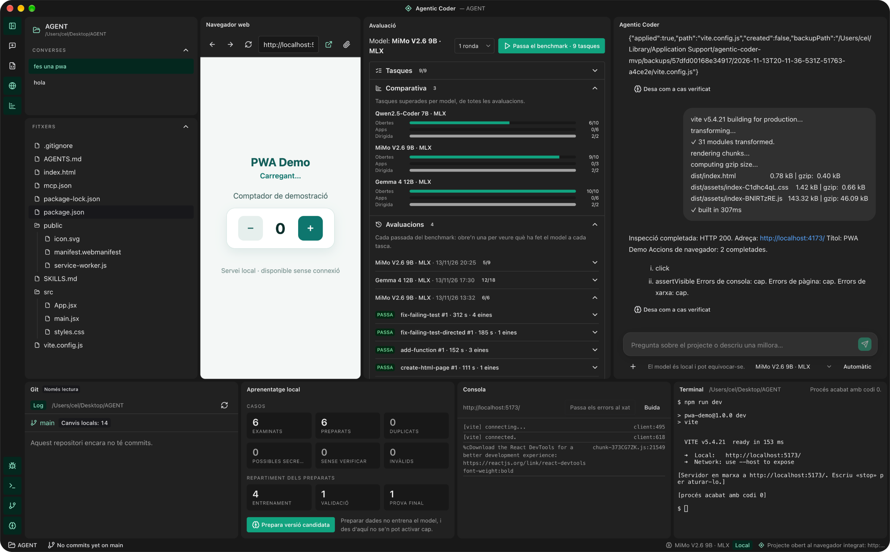

Codi obert · Local · LoRA
Una eina per entrenar el teu propi model llm.
Com més potent la teva màquina, més gran el model.
Un agent de programació que funciona al teu ordinador i aprèn de tu. Tu el guies, tu decideixes què val la pena, i amb això en fas el teu model.
Mac amb Apple Silicon · Linux i Windows amb GPU NVIDIA

Mira-ho en un minut
Una sessió real, amb el model funcionant al Mac: crea un projecte, l'obre al navegador i, al Log, es veu cada crida per dins.
Un model que aprèn de com treballes
No l'entrenes amb textos de ningú: l'entrenes amb la teva feina.
-
1
Guia
L'agent llegeix el projecte, escriu codi, passa les proves i mira la pàgina. Si s'encalla, li dius per on.
-
2
Desa
Quan una feina surt bé, la deses com a cas verificat. Des del primer cas ja l'ajuda com a exemple.
-
3
Entrena
Amb els teus casos n'entrenes una versió pròpia amb LoRA. Sempre des de l'original, que mai es toca.
-
4
Compara
Passa les mateixes tasques amb comprovacions objectives. Si la teva versió és millor, te la quedes.
El que els xats del núvol no t'ensenyen
El Log del model obre cada crida per dins, perquè entenguis com funciona un LLM de debò.
- El prompt sencer que rep el model, amb els tokens especials
- D'on surt cada part: instruccions, historial, eines i casos recuperats
- El text tal com el genera, i les crides a eines que se n'extreuen
- La probabilitat de cada token i les alternatives que s'ha plantejat
- Temps fins al primer token, tokens per segon i memòria
<|im_start|>system Ets un agent de programació local…<|im_end|> <|im_start|>user Arregla la prova que falla<|im_end|> <|im_start|>assistant
Sortida, amb la seguretat de cada token
Miro el fitxer de la prova… <tool_call>read_file</tool_call>
Creix amb la teva màquina
Funciona en qualsevol Mac amb Apple Silicon, i en una màquina professional (un M Pro, Max o Ultra amb més memòria) dona el màxim rendiment: models més grans, entrenaments amb casos sencers i respostes més ràpides. El que li ensenyes avui ho portes a un model més gran demà.
Mac amb Apple Silicon · 16 GB
7–12B
MLX · entrena exemples de 1.536 tokens
Mac amb 32–128 GB
30–70B
MLX · entrena casos sencers (4.096 tokens)
PC amb GPU NVIDIA
segons la VRAM
CUDA · Linux i Windows
Les xifres de 16 GB són mesurades (MiMo 9B en un M2 Pro). En un M Max o Ultra, l'amplada de banda de memòria és de 400 a més de 800 GB/s, davant dels 200 de l'M2 Pro, i és el que marca la velocitat de resposta.
Local i privat
El model, les converses, els casos i l'entrenament es queden al teu ordinador. Sense núvol, sense comptes i sense enviar el teu codi enlloc.
Descàrrega
Els models es baixen des de l'app. La primera vegada cal preparar el motor de Python: la guia ho explica pas a pas.
Mac
Apple Silicon · .dmg
Linux
GPU NVIDIA · .AppImage · .deb
Windows
GPU NVIDIA · .exe
Les apps no estan signades. Al Mac, la primera vegada: clic dret › Obre. Guies: general, Linux, Windows.